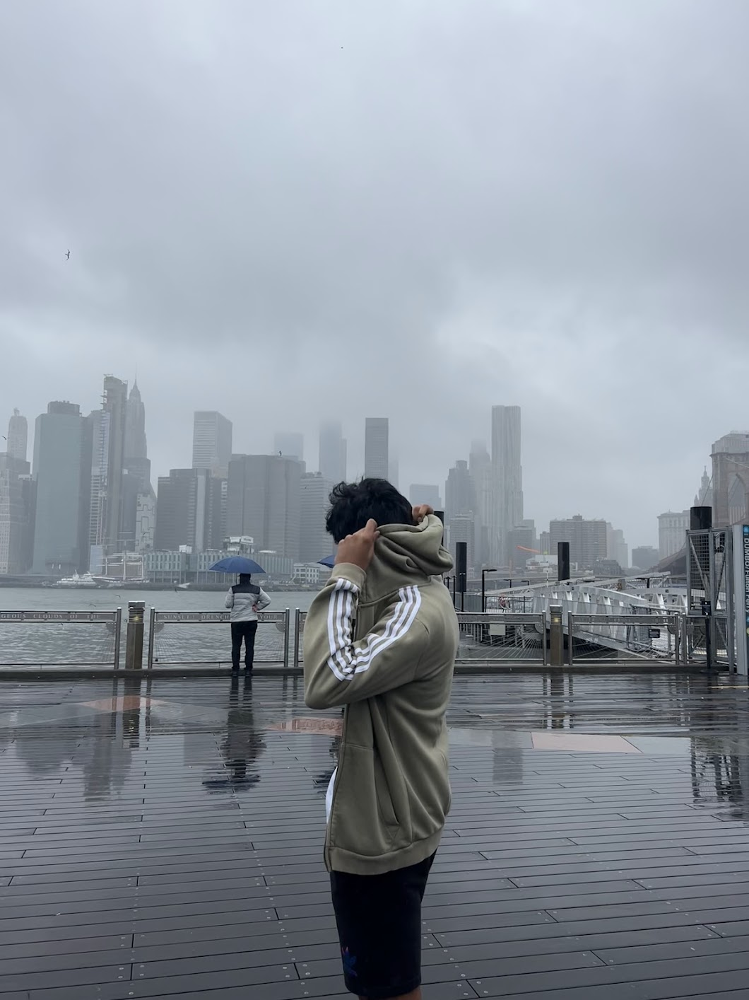

Mokshith Mannuru
BS/MS Computer Science @ Georgia Tech
Machine Learning • Systems • Applied AI • Backend

About
I'm a BS/MS Computer Science student at Georgia Tech interested in machine learning, systems, applied AI, and backend engineering.
One idea that fascinates me is how unbelievably dumb computers actually are. At the lowest level they simply flip billions of transistors on and off. Yet somehow we've learned how to turn that into systems that recognize images, understand language, and learn incredibly complex patterns.
Studying low-level systems has given me a deeper appreciation for the software we build on top of these simple machines. Through internships and research, I've worked on applied AI, machine learning, and backend systems, and I'm excited to continue exploring the intersection between intelligent software and the systems that power it.
Experience
- Incoming intern working on systems for evaluation and optimization of conversational AI agents
- Built LLM-powered text-to-SQL systems across microservices
- Built agentic RAG pipelines and hybrid classification systems

- LLM-guided neural architecture search + evolutionary algorithms
Projects
- Learning cost models to optimize GPU request placement across clusters
- Spotify analytics platform using Django and the Spotify API
- Gaming review platform built with Node.js, PostgreSQL and IGDB
Things About Me
- I enjoy basketball and cricket.
- Favorite athletes: Kyrie Irving, Russell Westbrook, Shaq, and Babar Azam.
- I can solve a Rubik’s cube in under 10 seconds.
- When I was younger I was sponsored by SpeedCubeShop.
- I love traveling and exploring new places.
- One of my favorite places I’ve visited is Lake Como.
- My favorite food is biryani. I’ll pretty much eat anything that tastes good.
- I enjoy taking photos while traveling, usually just simple iPhone shots.
Contact
mmannuru3@gatech.edu